DS-2TD4136-50
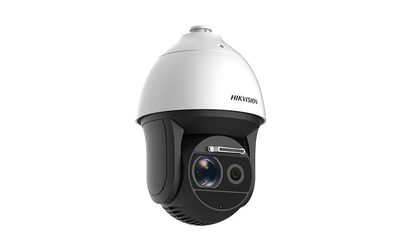
Características
DS-2TD4136-50
Cámara PTZ Térmica y óptica
Bi-espectro de velocidad roja, Zoom 30X
Barrido Progresivo Cmos 1/1.9”
2MP con doble lente (visión térmica y óptica)
IR inteligente 150m
Lente térmico 50mm
Seguimiento inteligente: Panorama, eventos,multi-escena.
Algoritmo avanzado de detección de incendios
DS-2DE4225IW-DE
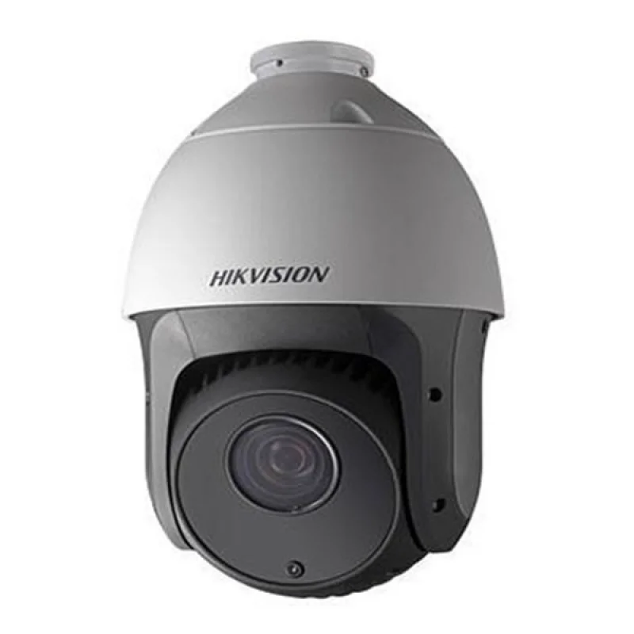
Características
Domo PTZ IR IP 2MP, CMOS 1/2.8” ICR ZOOM 25X, WDR
DS-2DE4225IW-DE
Resolución IP 2MP (1920 × 1080 a 30 fps.)
1/2.8 "CMOS de barrido progresivo
Iluminación: 0.005 Lux/ B / N: 0.001 Lux
0 Lux con IR
Zoom óptico 25 ×, zoom digital 16 ×
WDR, HLC, BLC, 3D DNR, Desempañar, EIS
Exposición regional, Enfoque regional
Hasta 100 m de distancia IR
12 VDC y PoE + (802.3 en, clase 4)
Soporta compresión de video H.265 + / H.265
No incluye fuente, ni soporte.
DS-2DE7232IW-AE
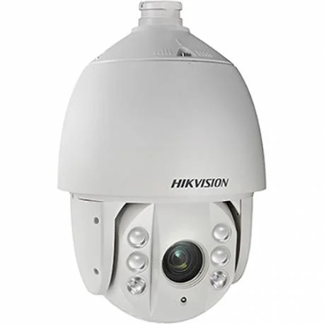
Características
Domo PTZ IR IP 2MP para exterior, CMOS 1/2,8” ICR ZOOM 32X, Slot SD
DS-2DE7232IW-AE
Resolución IP 2MP (1920×1080@60 fps)
CMOS 1/2.8” Scan Progresivo.
Iluminación: 0.005 Lux@1.6 Color / 0.001 Lux @F1.6 0
Lux con IR
Zoom óptico 32 ×, zoom digital 16 ×
WDR, HLC, BLC, 3D DNR, Desempañar, EIS
Hasta 150 m de distancia IR
24 VAC y Hi-PoE
Soporta compresión de video H.265 + / H.265
Dim.: 220 × 353.4mm Peso: 4.5kg
No incluye soporte, ni fuente.
DS-1005KI
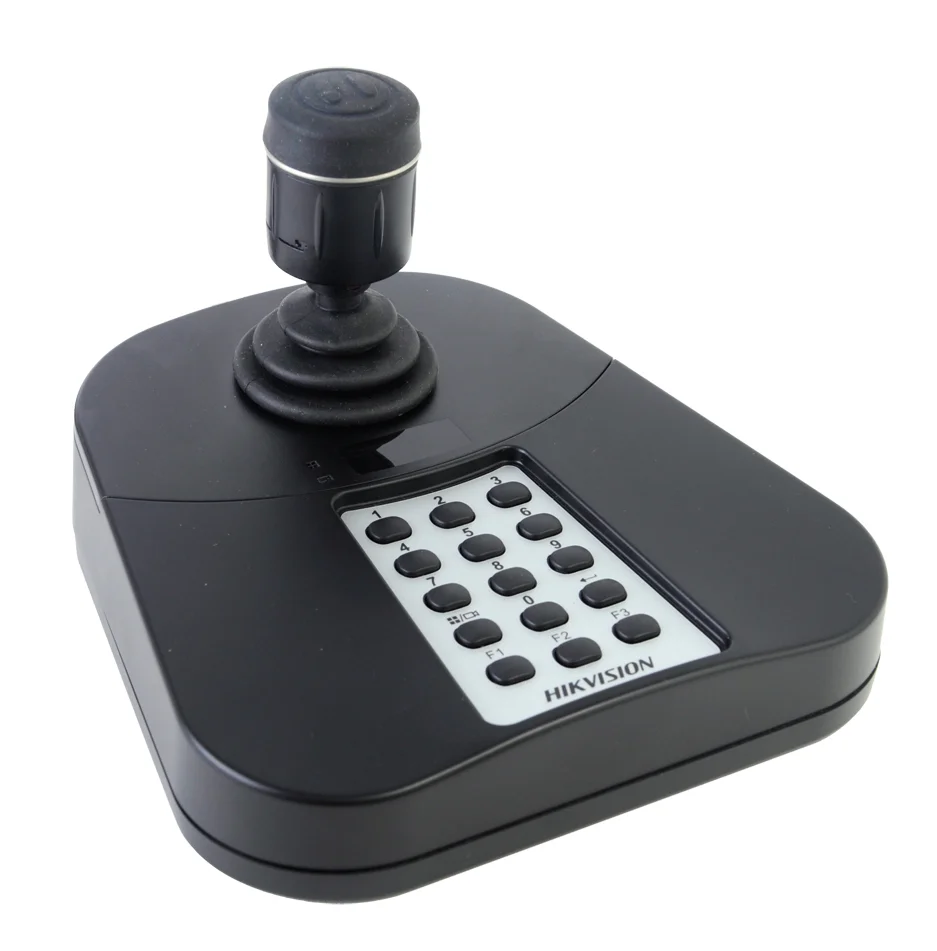
Características
Joystick USB para control de domos PTZ, Gabinete Alto Impacto
DS-1005KI
Control de 3 ejes
Gabinete Alto Impacto
Zoom rotación
2 botones de control de joystick de control PTZ y 3D.
Carcasa de sobremesa ABS
Hasta 15 botones programables
Tipo de interfaz: USB 2.0, DirectX
Fuente de alimentación: 5VDC vía USB
Soporte USB HID protocolo.
Consumo de energía: ≤ 5W
Dimensión: 167 * 177,5 * 116 (mm)
DS-1006KI
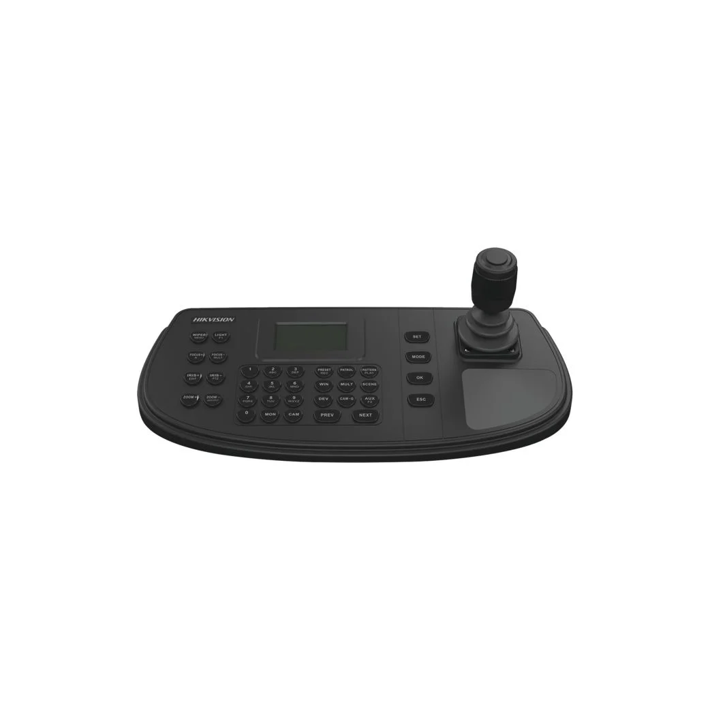
Características
Joystick analógico teclado con pantalla LCD, Touch screen, ergonómico
DS-1006KI
Cuenta con pantalla LCD de 128 x 64 pixeles
con retroiluminación.
Joystick 4D, 1 bus de telemetría RS-485 para
domos o DVR.
Control del ZOOM mediante giro
Dimensiones: 349 x 172 x 125 mm
Peso: 0.80 kg
Alimentación 12 VDC / 1.5 A
DS-7104NI-Q1
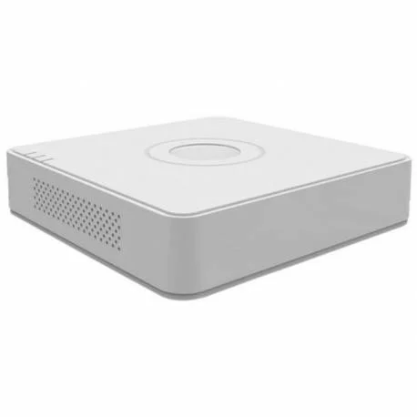
Características
NVR 4CH IP, TASA IN/OUT 40/40 Mbps, SALIDA HDMI/VGA, 1HDD, TCP/IP 10/100Tx
DS-7104NI-Q1
Grabación: 4CH 720p / 2CH 1080p
Reproducción: 4-ch 720P
Tasa de Bits de Grabación 40Mbps
Salida VGA y HDMI 1920 × 1080P /60Hz
Audio 1 IN/OUT
Soporta 1HDD (6Tb c/u)
2 USB 2.0, Gabinete Plástico
Alimentación 12Vdc
Dim.: 200 × 205 × 48 mm Peso: ≤ 1 Kg (sin HDD)
Incluye Fuente 110Vac
DS-7108NI-E1/8P
Características
NVR 8CH IP, TASA 80 Mbps, SALIDA HDMI/VGA, 1HDD, TCP/IP 10/100Tx
DS-7108NI-E1/8P
Resolución Grabación: hasta 5Mp
Reproducción: 8-ch 1080P / 8ch POE
Tasa de Bits de Grabación 80Mbps
Audio Two way (1 Out)
Soporta 1HDDs (6Tb)
TCP/IP 10/100 Mbps
2 USB 2.0, Gabinete Plástico
Alimentación 12Vdc - PoE 40W MAX
Dim.: 200 × 205 × 48 mm. Peso: ≤ 1 Kg (sin HDD)
Incluye Fuente 110Vac
DS-7608NI-E2/8P
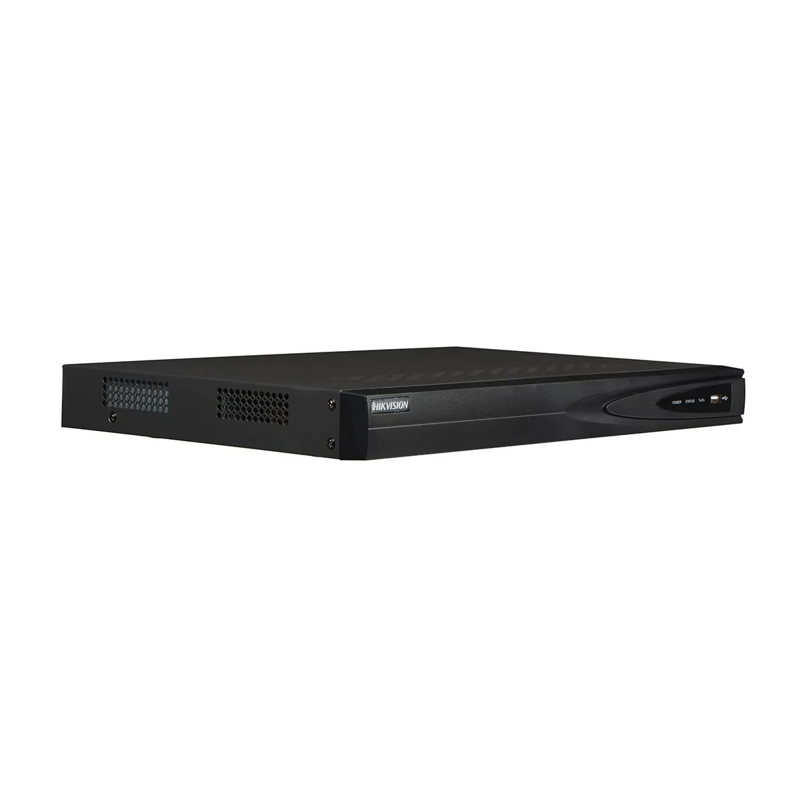
Características
NVR 8Ch, TASA IN/OUT 80/80 Mbps, Salida HDMI/VGA, 2HDD, 8CH POE
DS-7608NI-E2/8P
Soporta 8Ch IP
Resolución Grabación: hasta 6Mp
Tasa de Bits de Grabación 80Mbps
Audio Two way (1 Out)
Soporta 2HDDs (4Tb c/u)
Alimentación 12Vdc
Dim.: 445× 290 × 45 mm. Peso: ≤ 1 Kg (sin HDD)
8CH POE MÁX 120W
Incluye Fuente 110Vac
DS-7608NI-Q1
 Características
Características
NVR 8CH IP, TASA 80 Mbps, SALIDA HDMI/VGA, 1HDD, TCP/IP 10/100/1000
DS-7608NI-Q1
Resolución Grabación: hasta 8Mp
Reproducción: 8-ch
Formatos de video H.265 + / H.265 / H.264 / H.264 +
Se pueden conectar hasta 16 cámaras IP salida simultá-
nea HDMI / VGA
Salida de video HDMI 4K (3840 × 2160)
Soporta 1HDDs (6Tb)
TCP/IP 10/100/1000 Mbps
Alimentación 12Vdc
Dim.: 315 × 240 × 48 mm. Peso: ≤ 1 Kg (sin HDD)
Incluye Fuente 110Vac
DS-7616NI-K2/16P
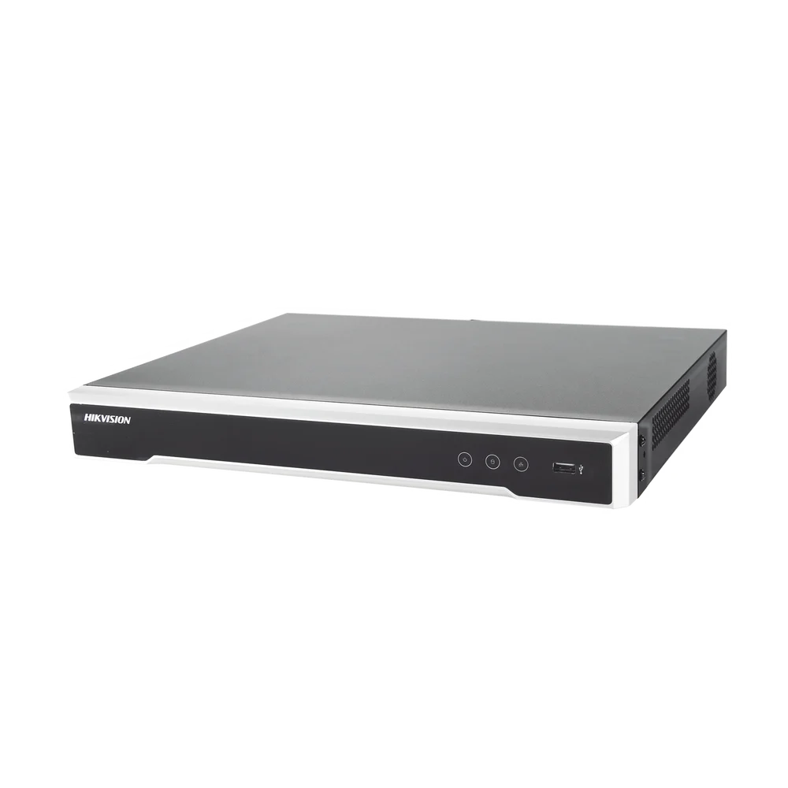
Características
NVR 16 Ch PLUG & PLAY, TASA Bits 160/160Mbps, Salida HDMI/VGA, 2HDD, 16CH POE
DS-7616NI-K2/16P
Soporta 16Ch IP
Resolución Grabación: hasta 8MP
Se admiten cámaras de red de terceros
Tasa de Bits de Grabación 160Mbps
Plug & Play con hasta 16 interfaces PoE independiente
H.265 / H.264 / MPEG4
Soporta 2HDDs (6Tb c/u)
Dim.: 385 × 315 × 52 mm.
Peso: ≤ 3 kg (sin HDD)
Incluye Fuente 110Vac
DS-7732NI-E4
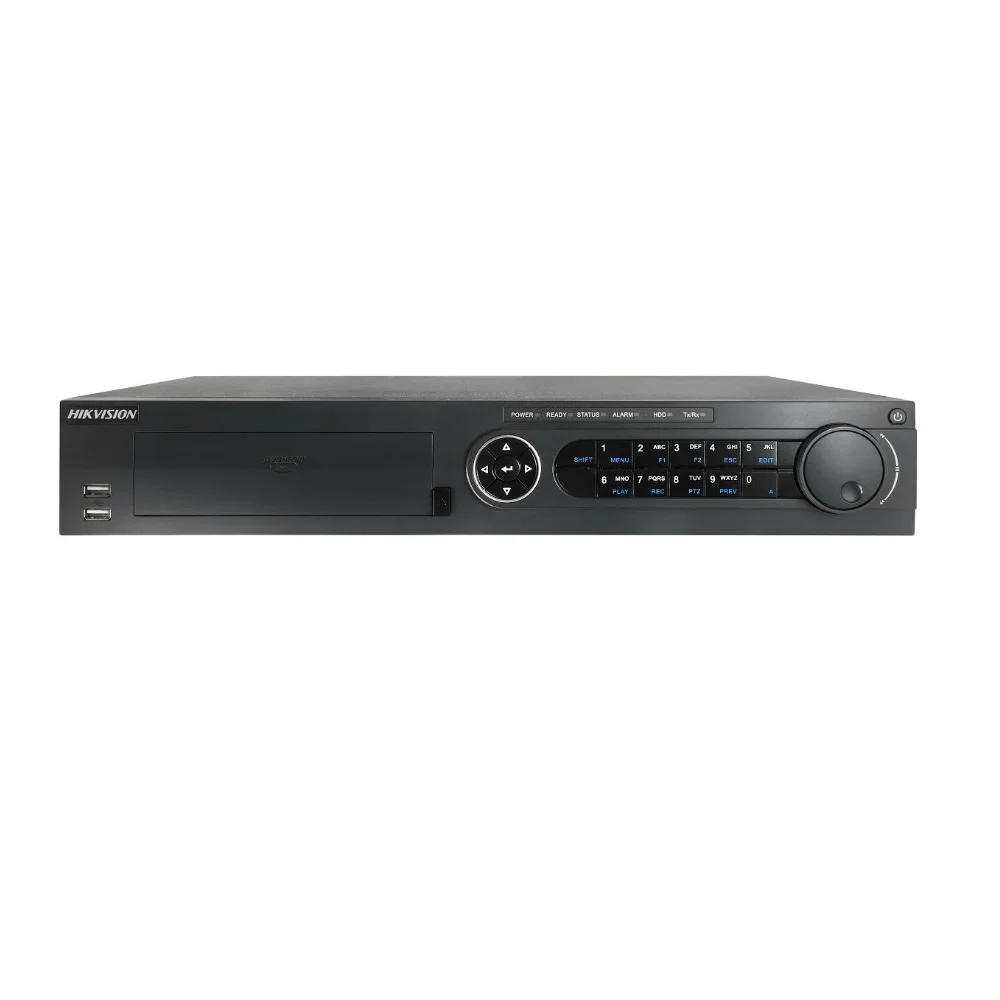
Características
NVR 32 Ch, TASA Bits 160/80Mbps, Salida HDMI/VGA, Soporta 4HDD
DS-7732NI-E4
Soporta 32Ch IP
Resolución Grabación: hasta 6Mp
Reproducción: 16Ch simultáneos
Alarmas 16in/4out
Tasa de Bits de Grabación 160Mbps
Audio Two way (1 Out)
Soporta 4HDDs de hasta 6Tb c/u
Dim.: 445 × 390 × 70mm. Peso: ≤ 4 Kg
Incluye Fuente 110Vac
DS-7732NI-K4
 Características
Características
NVR 32 Ch, TASA Bits 256/160 Mbps, Salida 4K HDMI/VGA, Soporta 4HDD
DS-7732NI-K4
Soporta 32Ch IP
Resolución Grabación: hasta 12Mp
Reproducción: 16Ch simultáneos
Alarmas 16in/4out
Tasa de Bits de Grabación 256Mbps
Audio Two way (1 Out)
Soporta 4HDDs de hasta 6Tb c/u
Dim.: 445 × 400 × 71mm. Peso: ≤ 5 Kg
Incluye Fuente 110Vac
DS-7732NI-E4
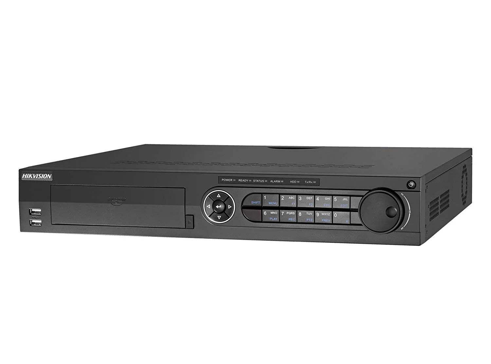
Características
NVR 32 Ch, TASA Bits 160/80Mbps, Salida HDMI/VGA, Soporta 4HDD
DS-7732NI-E4
Soporta 32Ch IP
Resolución Grabación: hasta 6Mp
Reproducción: 16Ch simultáneos
Alarmas 16in/4out
Tasa de Bits de Grabación 160Mbps
Audio Two way (1 Out)
Soporta 4HDDs de hasta 6Tb c/u
Dim.: 445 × 390 × 70mm. Peso: ≤ 4 Kg
Incluye Fuente 110Vac
DS-7732NI-K4
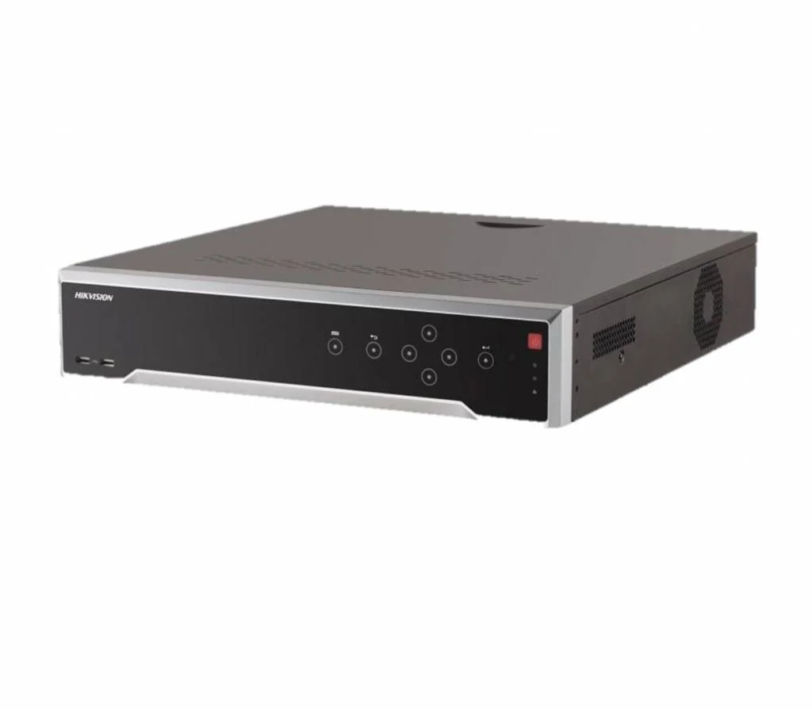
Características
NVR 32 Ch, TASA Bits 256/160 Mbps, Salida 4K HDMI/VGA, Soporta 4HDD
DS-7732NI-K4
Soporta 32Ch IP
Resolución Grabación: hasta 12Mp
Reproducción: 16Ch simultáneos
Alarmas 16in/4out
Tasa de Bits de Grabación 256Mbps
Audio Two way (1 Out)
Soporta 4HDDs de hasta 6Tb c/u
Dim.: 445 × 400 × 71mm. Peso: ≤ 5 Kg
Incluye Fuente 110Vac